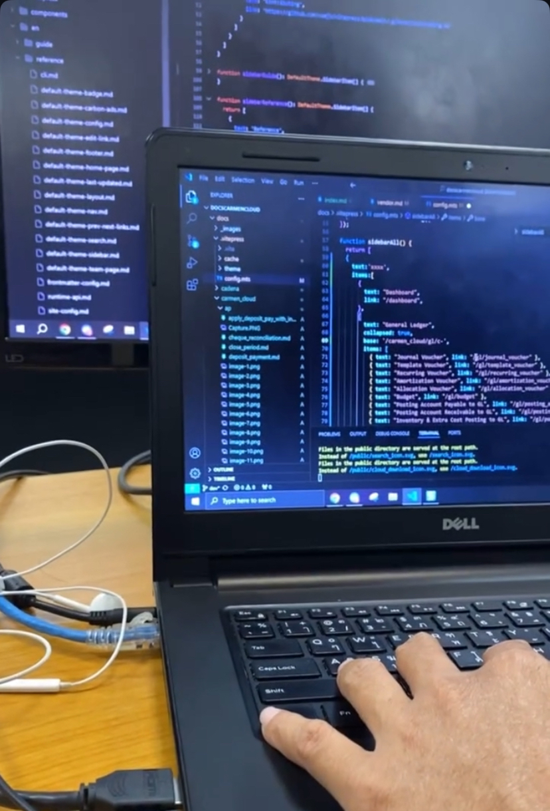
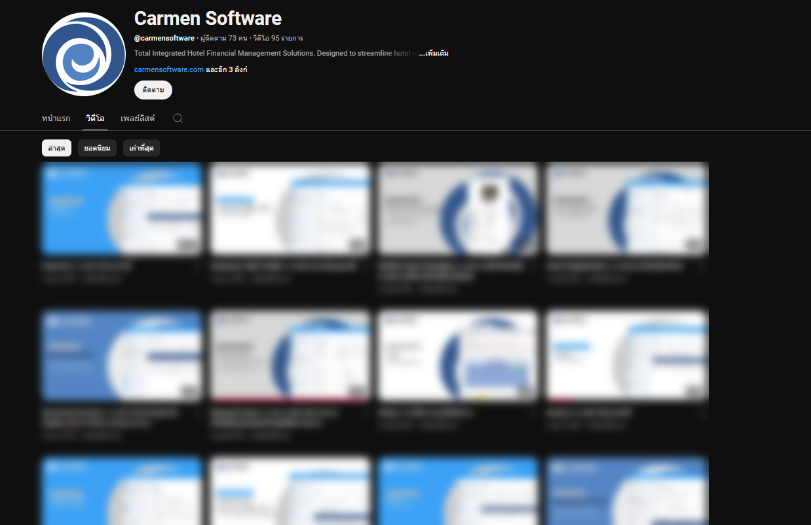
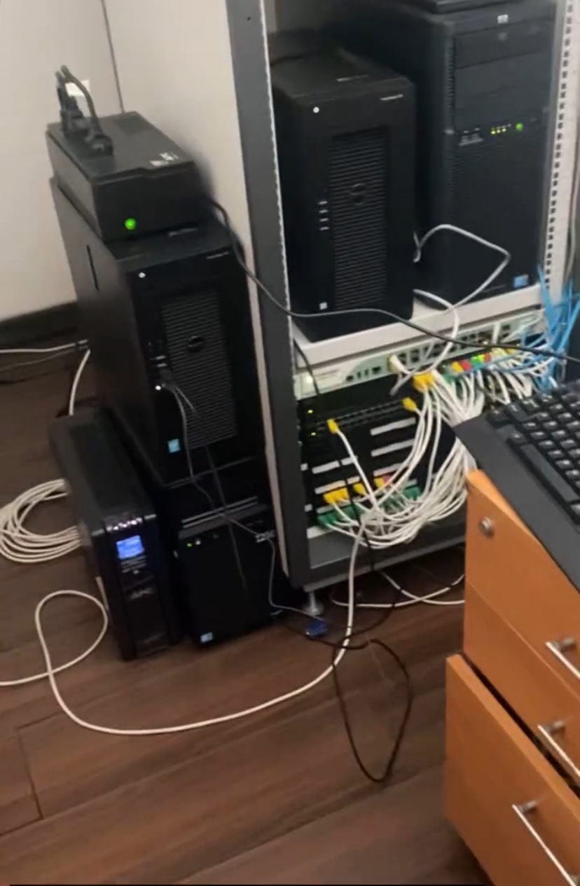

Carmen Software
Work Experience ประสบการณ์การทำงาน
บริษัท/องค์กร (Company/Organization): Carmen Software
ตำแหน่งงาน (Job Title): IT Support
ฅDepartment:Customer Success
ระยะเวลา (Duration):1 ปี 5 เดือน 3 วัน
บทบาทหน้าที่ (Responsibilities): Support ลูกค้าในการใช้งานโปรแกรมบัญชีและจัดซื้อ พร้อมรับสายโทรศัพท์และประสานงานกับฝ่ายต่าง ๆ
ความสำเร็จ (Achievements/Key Accomplishments):
- Support และแก้ไขปัญหาให้กับลูกค้าบัญชีและจัดซื้อได้
- ทำคู่มือการสอนการใช้งานโปรแกรม
- ทำระบบโทรศัพท์ PBX
- ตัดต่อคู่มือการใช้งานโปรแกรมลง YouTube
- ทำระบบ ZohoCRM/Desk เก็บข้อมูลลูกค้า
ทักษะที่ได้รับ (Skills Acquired):
- Customer Service: การบริการลูกค้าและการแก้ไขปัญหาต่าง ๆ ที่เกิดขึ้น
- Accounting: การทำบัญชีพื้นฐาน
- Inventory: การจัดการสินค้าคงคลังและการติดตามสต็อกการออก PR/PO/Receiving และอื่น ๆ
- PABX: การตั้งค่าและดูแลระบบโทรศัพท์ภายในองค์กร
- HTML: ความสามารถในการเขียนและแก้ไขเว็บไซต์พื้นฐาน
เหตุผลในการออก (Reason for Leaving):
- เนื่องจากต้องย้ายกลับบ้านเกิดเพื่อดูแลคุณแม่ที่ประสบปัญหาด้านสุขภาพ
รูปภาพที่เกี่ยวข้อง (Related Images):

1.ทำระบบ ZohoCRM/Desk เก็บข้อมูลลูกค้าและCase ต่าง ๆ

2.ตั้งค่าและดูแลระบบโทรศัพท์PBXภายในองค์กร

3.ใช้Github ทำคู่มือสอนการใช้งานโปรแกรม

4.ตัดต่อคู่มือการใช้งานโปรแกรมลง YouTubeด้วยAdobe Premiere Pro
5.รับสายโทรศัพท์ลูกค้าและแก้ไขปัญหาต่าง ๆ

ย้อนกลับ
6.ดูแลอุปกรณ์ด้าน IT เช่นเครื่องสำรองไฟ PCA และอื่น ๆ